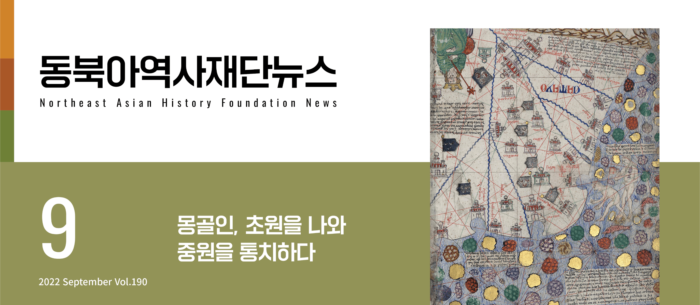
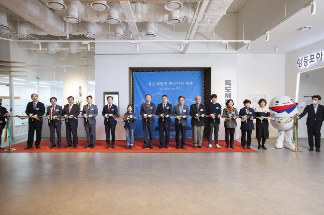

주메뉴
본문
동북아역사넷
동북아역사자료센터
독도연구소
독도아카이브
독도체험관
동북아 · 독도 교육 연수원
지난호 보기
구독신청
공공저작물이용정책
KOR
KOR
ENGLISH
日本語
中國語
뉴스레터
KOR
ENGLISH
日本語
中國語
search
close search
통합
검색
검색
mobile menu
close menu
통합검색
검색
메인 배경화면 이미지
NEWSLETTER
2022년 09월호
뉴스레터

COVER STORY
카탈루냐 지도 : 원나라 부분
카탈루냐 지도(Catalan Atlas)는 14세기 후반 유럽의 지리 지식을 집대성한 세계 지도로 1375년 스페인 마요르카 지도 제작의 대가 아브라함 크레스크(Elisha ben Abraham Cresques)가 만들었다. 카탈루냐 지도는 몽골 제국의 유라시아 통합과 지배로 인해 비약적으로 확대된 유럽의 세계 지리 지식을 잘...

동북아포커스
한·몽 공동 학술회의 개최
“원나라의 통치전략 연구”
몽골 울란바토르에서 공동 학술회의 개최 2022년 7월 6일 수요일, 파란 하늘과 푸른 초원의 나라 몽골의 수도 울란바 토르에서 “원나라의 통치전략 연구”를 주제로 한·몽...
심호성 재단 국제관계와 역사대화연구소 연구위원
동북아포커스
몽골 성소(聖所) 카라코룸, 수퍼파워, 그리고 고려
21세기 지구적 연결과 네트워크가 두텁다. 2022년 8월 2일 미국 하원의장 낸시 펠로시가 대만을 전격 방문하자, 중국인 민해방군이 대만을 ‘포위’해 군사훈련을 단행한다. 미국은...
설배환 전남대학교 교수
일제침탈사 시리즈1
낭만, 은폐, 망각을 넘어:
일제강점기 한반도의 일본인들
‘침략자’ 메이지유신 이래 조약 개정을 명분 삼아 조선을 침 략 하기위해 노력하던 일본 정부는 무력을 앞세워 1876년 2월 조선과 조일수호조규를 체결했다. 곧이어 ‘부산구조...
전성현 동아대학교 교수
역사의 현장을 가다
연변 지역의 발해 유적
연변(延邊) 지역은 오늘날 중국 길림성 연변조선족자치주이며, 유사 이래 한민족의 주요 활동 무대였다. 발해가 건국된 곳이고, 발해의 수도 가운데 상경성을 제...
임상선 재단 명예연구위원
재단뉴스
재단뉴스
한·중 문화충돌 대응 학술회의 개최 - 한국 음식문화의 미학, 그 여정에 대한 역사적 이해 - 재단은 지난 7월29일(금) ‘한국 음식문화의 미학, 그 여정에 대한 역사적 이해’를 주제로 비...
재단뉴스
2022년 독도지킴이학교 독도 탐방기
2022년 동북아역사재단 독도지킴이학교 지도교사 울릉도·독도 탐방이 결정되자 울릉도와 독도가 날 품어줄 생각에 마음이 설렜다.울릉도·독도 파고(波高)가 얼마인지, 날씨가...
심형엽 영남고등학교 교사
근현대 코리안 디아스포라
오키나와의 조선인 ‘위안부
피해자 배봉기
끌려온 땅, 오키나와에 남기 위해 ‘위안부’였음을 밝히다 1975년 10월. 일본 오키나와.배봉기가 추방당할 날이 점점 다가오고 있었다. 어디인지 제대로 알지 못한 채 오키나와...
심호성 재단 국제관계와 역사대화연구소 연구위원
go top